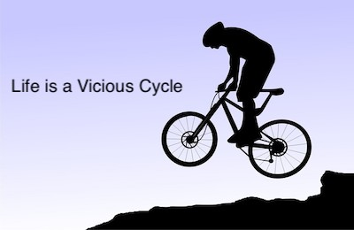

<!DOCTYPE html>
<!-- 
		Blackboard User Name: Anthony Johnson
		Date: 5/22/2020
		File: index.html
		Purpose: Online Resume using HTML and CSS 
-->
<html lang="en">
  <head>
    <meta charset="UTF-8">
    <meta name="viewport" content="width=device-width, initial-scale=1.0">
    <title>Anthony Johnson's Resume</title>
    <link href="https://fonts.googleapis.com/css2?family=Raleway&family=Tangerine:wght@700&display=swap" rel="stylesheet">
    <link rel="stylesheet" href="mystyles.css">
    
  </head>
  <body>
    <main>
      <!-- ***********************  ABOUT / PROFILE  *********************** -->
      <header>
      	<div class="myContent">
		        <h1>Anthony Johnson</h1>
		        <h2>Student Web Developer</h2>
		
		        <p>Aspiring web developer and Information Technology Specialist</p>
		        <p class="about-paragraph">I have over 19 years of experience as an IT systems and support analyst developing
		        	 technology-based solutions to meet customer expectations with local government and
		        	 logistic and compliance organizations. I am skilled in people and process management
		        	 using soft-skills, system administration, project management processes, customer service
		        	 and support with an impressive 90% completion rate well within the established service level
		        	 agreement requirements. Also, I have excellent analytical and problem-solving skills,
		        	 as well as strong written and verbal skills with the ability to work in a fast-paced team
		        	 or independently in mission-critical environment. My web developement training consist of
		        	 training in the following areas: HTML, CSS, PHP and Javascript</p>
      	</div>
      </header>

      <!-- ********************  PROJECTS / PORTFOLIO  ********************* -->
      <section class="projects">
      	<div class="myContent">
		        <h2 class="myFeature">Featured Projects</h2>
		        <p>View my scholastic projects below.</p>
		
		        <!-- Copy the whole <section> block to add more projects. -->
		        <section>
		          <h3>Vicious Cycles (Full Functioning Website)</h3>
		          
		          <p>As a required class project, I created a fully-functioning mult-page website using HTML formatting, CSS stylings, and creative content 
		          	wording for the entire website. Once evaluated by my professor the work was classified as superior.</p>
		          <a href="https://wcet3.waketech.edu/ajohnson/web140/viciouscycles/products.html" target="_blank">--> View website project</a>
		        </section>
		        <!-- End of Project block. -->
		        <section>
		          <h3>Simple HTML and CSS Page Demostration</h3>
		          
		          <p>In this project, I exercise my abilities to format a document using HTML tags and along with an image file using simple CSS formatting to polish the website.</p>
		          <a href="https://wcet3.waketech.edu/ajohnson/web140/ASN5/" target="_blank"> --> View website project</a>
		        </section>
      </div>
      </section>

      <!-- ***********************  WORK EXPERIENCE  *********************** -->
      <section class="work">
      	<div class="myContent">
	        <h2 class="formatWork">Work Experience</h2>
	        <!-- Copy this whole <section> block to add more jobs. -->
	        <section>
	          <h3>Customer Care Analyst</h3>
	          <p>Tryon Solutions</p>
	          <p>December 2019</p>
	          <p><ul>
	          	<li>Provided first-level support to end-users using technical skills
	          			and product expertise to resolve customer production issues according to the service-level agreement.</li> 
	          	<li>Logged and responded to customer support requests via phone, e-mail, and web interface.</li>
	          	<li>Triaged customers service request conducted necessary technical research (code review, database 
	          			queries, network traces, application debug, etc.) provided communications to cross functional team collaboration.</li>
	          	<li>Identified and reconciled operational system error(s) in client data to ensure business requirement(s) 
	          	 		and logistics compliance were kept. </li>
	          	 <li>Exhibited a strong commitment to customer service while building customer partnerships through strong 
	          	 		communications skills and displayed empathy for customer concerns.</li>
	          	 <li>Provided updates and case statuses to customers and management.</li>
	          	<li>Acted as product technical liaison between support and development teams
	          			providing research documentation isolating code issues as reported by the customer.</li>
	          	<li>Used strong SQL queries to establish problem root cause and generated detailed how-to 
	          			documentation explaining the solution.</li>
	          	<li>Expertly utilized support tools to expedite case resolution.</li>
	          </ul></p>
     		</div>
        </section>
        <!-- End of Job block. -->
      </section>

      <!-- ******************  EDUCATION & CERTIFICATIONS ****************** -->
      <section class="education">
      	<div class="myContent">
		        <h2>Education</h2>
		
		        <!-- Copy this whole <section> block to add more schools. -->
		        <section>
		          <h3>Wake Tech Community College - Raleigh, NC</h3>
		          <p>Currently pursuing AAS in Web Development</p>
		          <p>The Web Technologies program prepares graduates for careers in information technology arena using computers to disseminate and collect
		          	information via the web. Course work covers the following:</p>
		          <ul>
		          	<li>Web design</li>
		          	<li>Web scripting and mark up languages</li>
		          	<li>Databases</li>
		          	<li>Web programming</li>
		          	<li>e-commerce</li>
		          	<li>Web content management systems</li>	
		          </ul>
		        </section>
		        <!-- End of School block. -->
      </div>
      </section>

      <!-- *****************  CONTACT INFO / SOCIAL MEDIA  ***************** -->
      <footer>
      	<div class="myContent">
		        <h2>Let's Keep in Touch!</h2>
		
		        <!-- Social media and contact links. Add or remove any networks. -->
		        <ul>
		          <li><a href="mailto:ajohnson2@my.waketech.edu">ajohnson2@my.waketech.edu</a></li>
		          <li><a href="https://divisiononedesigns.wordpress.com/" target="_blank">DivisionOne Designs</a></li>
		          <li><a href="https://twitter.com" target="_blank">Twitter</a></li>
		          <li><a href="https://linkedin.com" target="_blank">LinkedIn</a></li>
		          <li><a href="https://facebook.com" target="_blank">Facebook</a></li>
		        </ul>
        </div>
      </footer>
    </main>
  </body>
</html>
